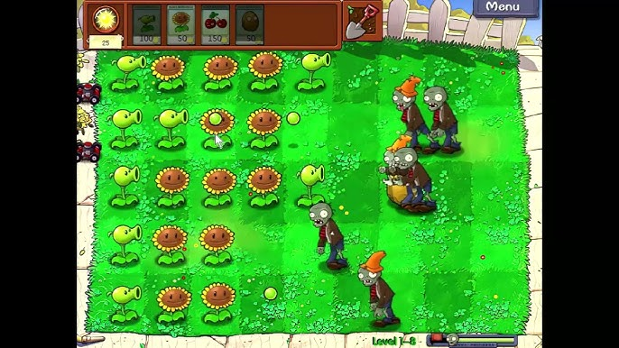
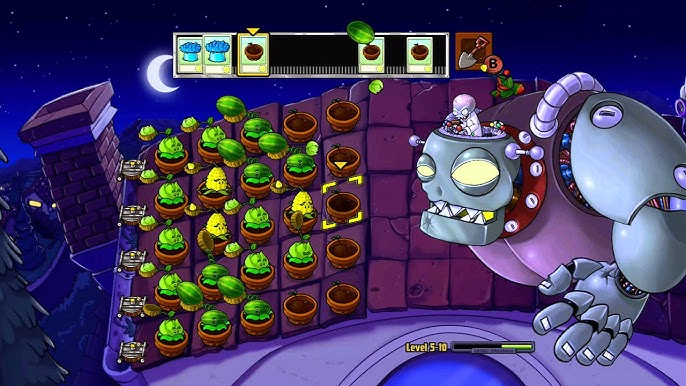

These are normal levels that the user usually complete, in these levels zombies usually fit into their theme, for example in an aquatic world zombie could be an octupus or starfish, while completing some levels also rewards the user an plant that relates to the world theme. Below is an photo of what would typically happen in an normal level

These level are special levels that often appear at the end of the world, these level offer an boss fight between the mega brain zombie and the user, the level also include minigames for the user to complete and gives an enhance gameplay compare to normal levels. When the boss is defeated the user is granted access to more worlds. Below is an photo of what a boss level would look like
